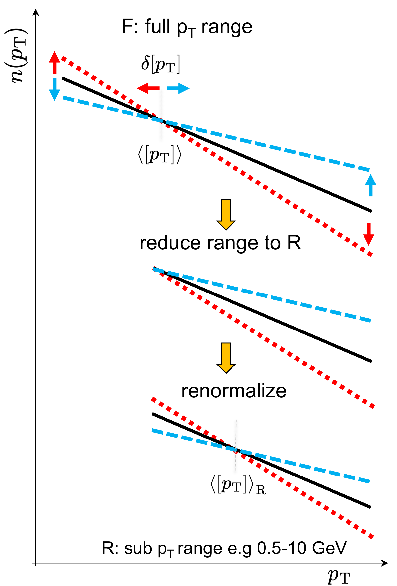
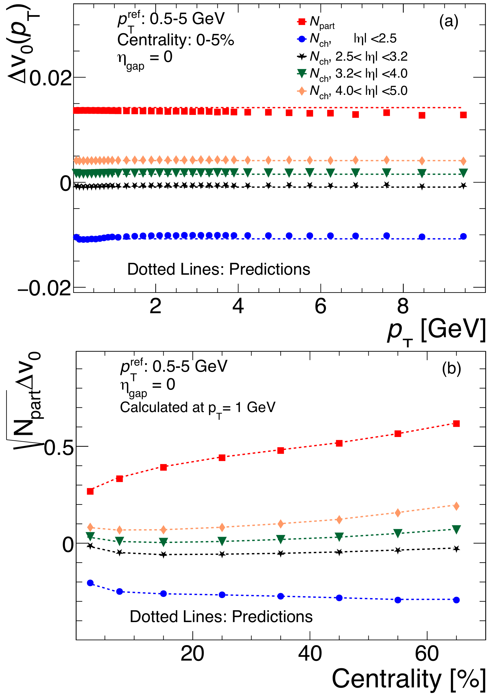
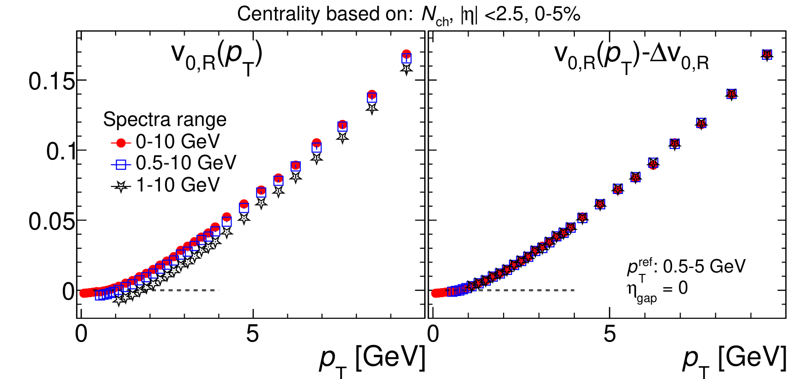

Reading radial flow: trust the shape of the curve, not where it crosses zero
The shape of differential radial flow v₀(pT), not its zero-crossing, carries physical information
S. Bhatta, A. Dimri, J. Jia, arXiv:2504.20008 [nucl-th] (2025), preprint
My role: leading author. Related: the ATLAS v₀(pT) measurement.
In one paragraph
Event by event, a collision's momentum spectrum changes in two ways: the total number of particles goes up or down, and the spectrum tilts. Only the tilt is radial flow. We show that the number fluctuations add a constant offset to v₀(pT). That offset moves the zero crossing but leaves the shape alone, so only the shape carries physics.
1The gap: two kinds of fluctuation hide in one spectrum
Radial flow is measured through v₀(pT): how the spectrum at each momentum moves together with the event's average momentum [pT]. But each event's spectrum also scales up or down with the event's particle count (global multiplicity fluctuations), which depends on how centrality is defined.
2What we compute: fractional spectra in a model without flow
Write each event's spectrum as N(pT) = N · n(pT): the total count N times the fractional spectrum n(pT), whose area is one. Fluctuations of N are multiplicity; fluctuations of n(pT) are shape.
We tested this with HIJING, a model of Pb+Pb collisions with no collective flow, ideal for isolating multiplicity effects. We varied the centrality estimator, the pT range used to normalise n(pT), and the reference range for [pT].

3What we observe: constant offsets, same shape
Centrality definition
With raw spectra N(pT), each centrality estimator gives a v₀(pT) shifted by a different constant. With fractional spectra n(pT), all estimators agree.


Normalisation range
Experiments cover different pT ranges (ALICE above 0.1 GeV, CMS above 0.3 GeV, ATLAS above 0.5 GeV). Even at a fixed total count, the count inside a sub-range still fluctuates. Cutting the range shifts v₀(pT) down and moves its zero crossing to the average pT of that range.

4What we conclude: the zero crossing is bookkeeping, the shape is physics
Every formulation of v₀(pT) agrees up to a constant offset. That offset reflects volume or centrality fluctuations, not radial flow, and it leaves integrated [pT] fluctuations unchanged. So only the shape of v₀(pT) carries physical information, not its zero crossing.
Before comparing experiments or theory, curves should be shifted vertically to a common zero crossing. We suggest the full-range ⟨pT⟩, which is routinely published. To remove the ambiguity completely, we propose the slope dv₀/dpT.
5What comes next
- Measure the slope: dv₀/dpT needs much larger event samples and careful pT binning.
- Align experiments: put ALICE, CMS and ATLAS results on a common baseline before comparing them.
- Link to the plasma's properties: HIJING has no flow, so hydrodynamic models are needed to show how the shape responds to viscosity and the equation of state.
All plots on this page are reproduced from that paper under CC BY 4.0. Animations are simplified illustrations made for this page, not results of the paper.